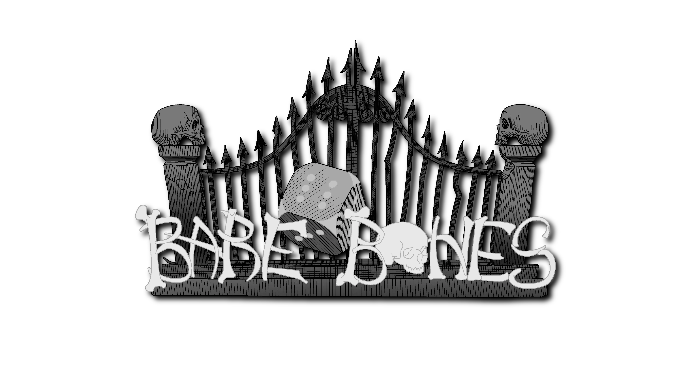

Welcome to BareBones RPG
A rules-light tabletop RPG using a single d6. No bookkeeping. Cinematic. Fast. Loose.
Hey there! This is a fresh, HTML-powered version of the BareBones RPG: Basic Edition SRD. It’s packed with everything you need to run a tabletop RPG—whether you’re just messing around for a night or gearing up for a campaign that could go on forever. Dive in, roll some dice, and have fun!
BareBones RPG keeps things simple, fast, and fun. All you need is a six-sided die (yep, just a regular d6) and a few easy-to-learn rules. You can run anything: high fantasy, creepy horror, gritty detective stuff, post-apocalyptic chaos, or weird modern adventures. It’s setting-agnostic, so you can make it your own. No mountains of rules to memorize, no math to hold you down, and no rule lawyers—just more time for actual gaming.
This digital SRD is released entirely for Gratis (Free) under the Creative Commons Attribution 4.0 License. It is an official companion to projects by Kill the D20 and Victor Gregory Matos.
Want to collaborate, share feedback, or help expand the system? Get in touch!
Email |
Blog |
Social Media Garbage